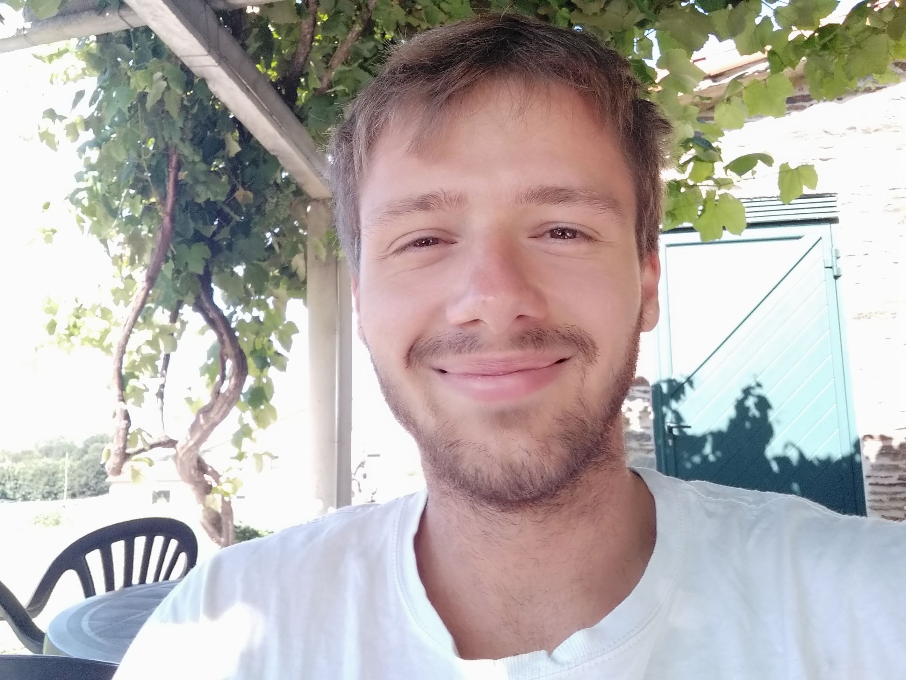

During my Master’s years I developed a strong interest towards Statistical Physics, Complex Systems, Computational Physics, Networks dynamics, Monte Carlo Algorithms and Molecular Dynamics Simulation. I strive to work in a context where theory about physical and real-life complex systems can be tested by, and give insights into, simulation methods.
This led me to work on a Master thesis in investigating the emergence of ecological patterns through simulation of interacting DNA single strands. Inspired and motivated by experimental results obtained through a molecular biology platform (SELEX), the aim of the project is to analyze, investigate and explain the emergence of “species” in a population of competing and evolving DNA species.
In future I would like to learn more about Complex Systems Theory, Monte Carlo Algorithms, Network Theory and exploit the mathematical machinery typical of computational methods.
I worked at
I'm currently working as tutor at
I’m working as informatics teacher at
nicolo.pedrani at studenti.unimi.it
Physics Department
University of Milan
Celoria 16
Milan
Italy